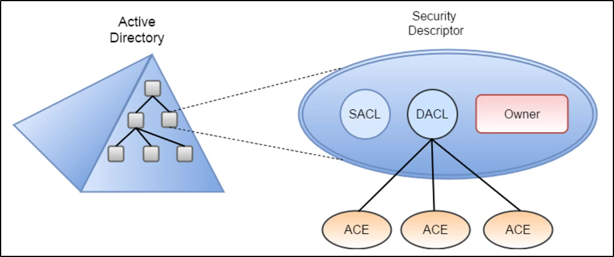

ACL (Access Control Model)
Permette di abiltiare controlli sull'abilità di un processo di poter accedere
ad Oggetti o altre risorse in Active Directory, basandosi su vari elementi:
- Access Tokens (security context di un processo -oppure - identità e privilegi di un utente)
- Security Descriptors (SID dell'owner dell'oggetto, Discretionary ACL (DACL) e System ACL (SACL))
Quando un processo o persona deve accedere ad una risorsa,
deve presentare il suo Access Token.
Dall'altro lato, l'oggetto il quale viene accesso,
possiede i Security Descriptors.
La DACL è la lista di chi ha i permessi per accedere a questo oggetto,
La SACL controlla la policy applicata sull'oggetto (e.g. logga permessi mancati da chi prova ad accedere)

12:26